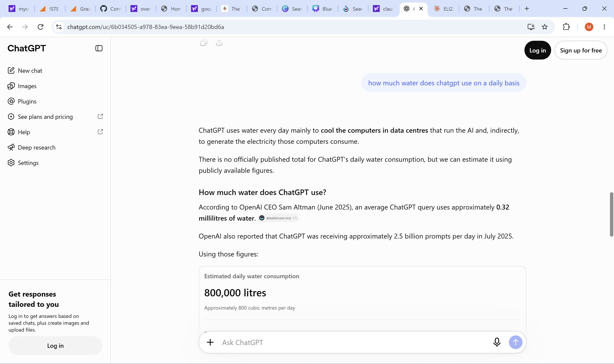
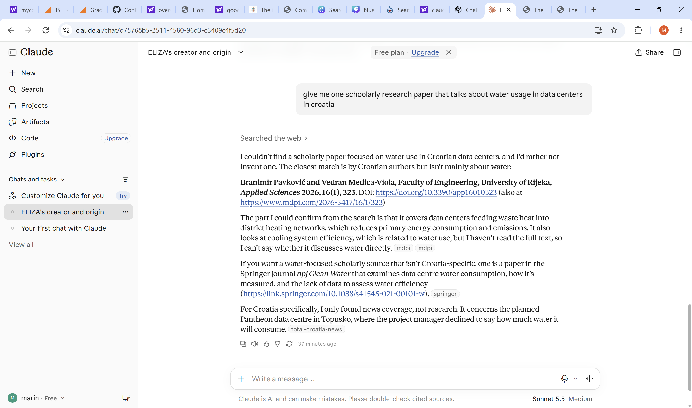

Put It to the Test
How I tested
I asked ChatGPT (OpenAI, 2026) and Claude (Anthropic, 2026) the same five questions on 22 November 2026. Four questions were about facts from this site, and one was a tricky question. Then I checked every answer against my sources.
Results
| Question | ChatGPT said | Verdict | Claude said | Verdict | Checked against |
|---|---|---|---|---|---|
| Who created ELIZA, and when? | Joseph Weizenbaum, 1966 | Correct | Joseph Weizenbaum, 1966 | Correct | Weizenbaum (1966) |
| Who created the Transformer, when, and what does it do? | Google researchers, 2017; it helps AI understand context | Correct | Google researchers, 2017; it helps AI see how words connect | Correct | Vaswani et al. (2017) |
| Who created ChatGPT, and when was it released? | OpenAI, 30 November 2022 | Correct | OpenAI, 30 November 2022 | Correct | OpenAI (2022) |
| How much water does ChatGPT use per day? | About 800,000 litres, but said it is only an estimate | Partly correct | Gave many different guesses, around 17 million litres | Partly correct | Altman (2025) |
| Tricky: a research paper about data centre water use in Croatia? | Said none exists and gave a real general paper instead | Correct | Said none exists, then gave a real paper but with wrong authors | Partly correct | Google Scholar: Ristic et al. (2015); Požgaj et al. (2026) |
Screenshots


Reflection
Both assistants got the easy questions right. I thought they would invent a fake paper for the tricky question, but they did not. Still, Claude gave a real paper with the wrong authors. If I had copied it, my reference would have been wrong. For the water question, the two answers were very different. This shows that AI can sound sure even when nobody knows the real answer. So the assistants were mostly right, but not always. My first rule is to always try to understand something before asking AI. My second rule is to use AI to understand things, not to do my work for me. My third rule is to check names, dates and numbers. This matches RIT's academic integrity policy. AI is great at helping me study, but I have to know or learn everything it helps me with.